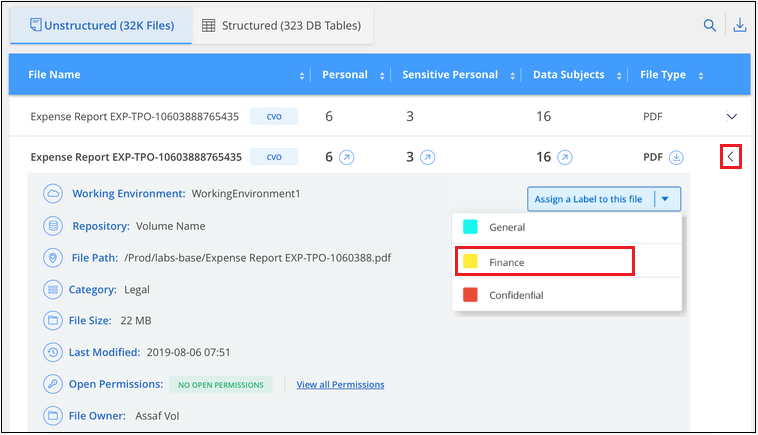
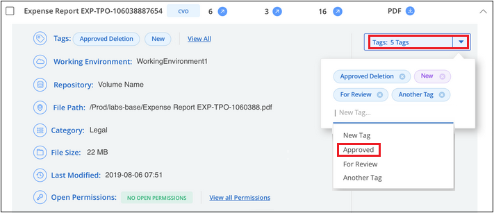
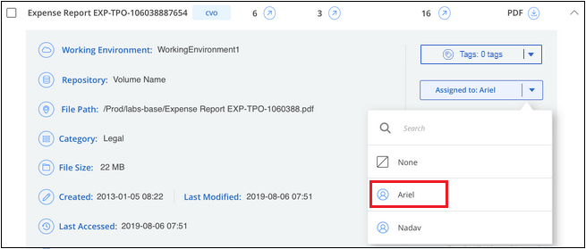

Dokumentationsänderungen beantragen
Dokumentationsänderungen beantragen In GitHub bearbeiten
In GitHub bearbeiten Leitfaden für Beitragende
Leitfaden für BeitragendeOrganisieren von privaten Daten
Beitragende
Cloud Data Sense bietet zahlreiche Möglichkeiten für das Management und die Organisation von privaten Daten. Auf diese Weise können Sie die für Sie wichtigsten Daten besser einsehen.
-
Wenn Sie abonniert sind "Azure Information Protection (AIP)" Zum Klassifizieren und Schützen Ihrer Dateien können Sie Cloud Data Sense verwenden, um diese AIP-Etiketten zu verwalten.
-
Sie können Tags zu Dateien hinzufügen, die Sie als Organisation oder für eine Art von Follow-up markieren möchten.
-
Sie können einen BlueXP-Benutzer einer bestimmten Datei oder mehreren Dateien zuweisen, sodass diese Person für das Management der Datei verantwortlich ist.
-
Mit der "Policy"-Funktion können Sie Ihre eigenen individuellen Suchanfragen erstellen, so dass Sie die Ergebnisse einfach durch Klicken auf eine Schaltfläche sehen können.
-
Sie können Benachrichtigungen per E-Mail an BlueXP-Benutzer senden, wenn bestimmte kritische Richtlinien Ergebnisse liefern.

|
Die in diesem Abschnitt beschriebenen Funktionen sind nur verfügbar, wenn Sie eine vollständige Klassifizierungsprüfung Ihrer Datenquellen durchgeführt haben. Datenquellen, bei denen nur ein Mapping-Scan vorliegt, zeigen keine Details auf Dateiebene an. |
Sollte ich Etiketten oder Etiketten verwenden?
Nachfolgend sehen Sie einen Vergleich zwischen Data Sense Tagging und Azure Information Protection Labeling.
| Tags | Etiketten |
|---|---|
Datei-Tags sind ein integrierter Bestandteil von Data Sense. |
Voraussetzung ist, dass Sie den Azure Information Protection (AIP) abonniert haben. |
Das Tag wird nur in der Data Sense Datenbank gespeichert - es wird nicht in die Datei geschrieben. Die Datei oder die abgerufene oder geänderte Datei werden nicht geändert. |
Die Bezeichnung ist Teil der Datei, und wenn sich die Bezeichnung ändert, ändert sich die Datei. Diese Änderung ändert auch die Zeiten, auf die zugegriffen wurde und die geändert wurden. |
Sie können mehrere Tags für eine einzelne Datei haben. |
Sie können eine Bezeichnung auf einer einzelnen Datei haben. |
Das Tag kann für interne Datensense-Aktion verwendet werden, z. B. Kopieren, Verschieben, Löschen, Ausführen einer Richtlinie, Usw. |
Andere Systeme, die die Datei lesen können, können das Etikett sehen - welches für zusätzliche Automatisierung verwendet werden kann. |
Nur ein einzelner API-Aufruf wird verwendet, um zu sehen, ob eine Datei ein Tag hat. |
Kategorisieren Sie Ihre Daten mit AIP-Etiketten
Sie können AIP-Etiketten in den Dateien verwalten, die Cloud Data Sense scannt, wenn Sie abonniert haben "Azure Information Protection (AIP)". Mit AIP können Sie Dokumente und Dateien klassifizieren und schützen, indem Sie Etiketten auf Inhalte anwenden. Mit „Data Sense“ können Sie die bereits zugewiesenen Beschriftungen anzeigen, Dateien Beschriftungen hinzufügen und Etiketten ändern, wenn bereits eine Bezeichnung vorhanden ist.
Cloud Data Sense unterstützt AIP-Etiketten in den folgenden Dateitypen: .DOC, .DOCX, .PDF, .PPTX, .XLS, .XLSX
|
|
|
Integrieren von AIP-Etiketten in Ihren Arbeitsbereich
Bevor Sie AIP-Etiketten verwalten können, müssen Sie die AIP-Label-Funktion in Cloud Data Sense integrieren, indem Sie sich in Ihrem bestehenden Azure-Konto anmelden. Nach der Aktivierung können Sie AIP-Beschriftungen in Dateien für alle verwalten "Datenquellen" In Ihrem BlueXP Workspace.
-
Sie benötigen ein Konto und eine Azure Information Protection-Lizenz.
-
Sie müssen die Anmeldedaten für das Azure-Konto besitzen.
-
Wenn Sie Etiketten in Dateien ändern möchten, die in Amazon S3 Buckets gespeichert sind, stellen Sie die Berechtigung sicher
s3:PutObjectIst in der IAM-Rolle enthalten. Siehe "Einrichten der IAM-Rolle".
-
Klicken Sie auf der Seite Cloud Data Sense Configuration auf AIP Labels integrieren.

-
Klicken Sie im Dialogfeld AIP-Etiketten integrieren auf in Azure anmelden.
-
Wählen Sie auf der angezeigten Microsoft-Seite das Konto aus, und geben Sie die erforderlichen Anmeldedaten ein.
-
Kehren Sie zur Registerkarte Cloud Data Sense zurück, und Sie sehen die Meldung "AIP-Labels wurden erfolgreich in das Konto <Account_Name> integriert.
-
Klicken Sie auf Schließen und Sie sehen den Text AIP Labels integriert oben auf der Seite.

Sie können AIP-Beschriftungen im Ergebnisbereich der Untersuchungsseite anzeigen und zuweisen. Außerdem können Sie Dateien mithilfe von Richtlinien AIP-Etiketten zuweisen.
Anzeigen von AIP-Etiketten in Ihren Dateien
Sie können die aktuelle AIP-Bezeichnung anzeigen, die einer Datei zugewiesen ist.
Klicken Sie im Bereich „Untersuchungsergebnisse“ auf  Für die Datei zum erweitern der Dateimetadaten.
Für die Datei zum erweitern der Dateimetadaten.

Manuelles Zuweisen von AIP-Beschriftungen
Mit Cloud Data Sense können Sie AIP-Etiketten aus Ihren Dateien hinzufügen, ändern und entfernen.
Führen Sie diese Schritte aus, um einer einzelnen Datei eine AIP-Bezeichnung zuzuweisen.
-
Klicken Sie im Bereich „Untersuchungsergebnisse“ auf
 Für die Datei zum erweitern der Dateimetadaten.
Für die Datei zum erweitern der Dateimetadaten.
-
Klicken Sie auf Etikett dieser Datei zuweisen und wählen Sie dann die Beschriftung aus.
Die Beschriftung wird in den Dateimetadaten angezeigt.
So weisen Sie mehreren Dateien eine AIP-Bezeichnung zu:
-
Wählen Sie im Bereich Ergebnisse der Datenuntersuchung die Datei oder die Dateien aus, die Sie beschriften möchten.

-
Um einzelne Dateien auszuwählen, aktivieren Sie das Kontrollkästchen für jede Datei (
 ).
). -
Um alle Dateien auf der aktuellen Seite auszuwählen, aktivieren Sie das Kontrollkästchen in der Titelzeile ().
-
-
Klicken Sie in der Symbolleiste auf Etikett und wählen Sie die AIP-Bezeichnung:

Die AIP-Bezeichnung wird den Metadaten für alle ausgewählten Dateien hinzugefügt.
Automatisches Zuweisen von AIP-Etiketten mit Richtlinien
Sie können allen Dateien, die die Kriterien der Richtlinie erfüllen, eine AIP-Beschriftung zuweisen. Sie können beim Erstellen der Richtlinie das AIP-Etikett angeben oder die Beschriftung beim Bearbeiten einer Richtlinie hinzufügen.
Etiketten werden kontinuierlich in Dateien hinzugefügt oder aktualisiert, wenn Cloud Data Sense Ihre Dateien scannt.
Je nachdem, ob bereits ein Label auf eine Datei und die Klassifizierungsstufe des Etiketts angewendet wurde, werden beim Ändern einer Bezeichnung folgende Aktionen ausgeführt:
| Wenn die Datei… | Dann… |
|---|---|
Hat kein Etikett |
Die Beschriftung wird hinzugefügt |
Verfügt über ein bereits vorhandenes Etikett mit einer niedrigeren Klassifizierungsstufe |
Das Etikett der höheren Ebene wird hinzugefügt |
Verfügt über ein bereits vorhandenes Etikett mit einer höheren Klassifizierungsstufe |
Das Etikett der höheren Ebene bleibt erhalten |
Wird eine Bezeichnung sowohl manuell als auch von einer Richtlinie zugewiesen |
Das Etikett der höheren Ebene wird hinzugefügt |
Ist zwei Richtlinien zugewiesen |
Das Etikett der höheren Ebene wird hinzugefügt |
Führen Sie diese Schritte aus, um einer vorhandenen Richtlinie eine AIP-Beschriftung hinzuzufügen.
-
Klicken Sie auf der Liste Richtlinien auf Bearbeiten für die Richtlinie, in der Sie die AIP-Bezeichnung hinzufügen (oder ändern) möchten.

-
Aktivieren Sie auf der Seite Richtlinie bearbeiten das Kontrollkästchen, um automatische Beschriftungen für Dateien zu aktivieren, die den Richtlinieparametern entsprechen, und wählen Sie die Beschriftung aus (z. B. Allgemein).

-
Klicken Sie auf Save Policy und das Etikett wird in der Policy description angezeigt.
|
|
Wenn eine Richtlinie mit einem Etikett konfiguriert wurde, die Bezeichnung aber seitdem von AIP entfernt wurde, wird der Name der Bezeichnung auf AUS gesetzt und die Bezeichnung nicht mehr zugewiesen. |
Entfernen der AIP-Integration
Wenn Sie AIP-Beschriftungen in Dateien nicht mehr verwalten möchten, können Sie das AIP-Konto aus der Cloud Data Sense Schnittstelle entfernen.
Beachten Sie, dass die Etiketten, die Sie mit Data Sense hinzugefügt haben, nicht geändert werden. Die in Dateien vorhandenen Beschriftungen bleiben so, wie sie derzeit vorhanden sind.
-
Klicken Sie auf der Seite Configuration auf AIP Labels integriert > Integration entfernen.

-
Klicken Sie im Bestätigungsdialogfeld auf Integration entfernen.
Anwenden von Tags zur Verwaltung der gescannten Dateien
Sie können Dateien, die Sie für eine Art von Follow-up markieren möchten, ein Tag hinzufügen. Sie haben z. B. einige doppelte Dateien gefunden und möchten eine davon löschen, müssen aber überprüfen, welche Dateien gelöscht werden sollen. Sie könnten der Datei einen Tag mit "Prüfen zum Löschen" hinzufügen, damit Sie wissen, dass diese Datei eine Recherche und eine Art von zukünftigen Aktionen erfordert.
Mit „Data Sense“ können Sie die Tags anzeigen, die Dateien zugewiesen sind, Tags hinzufügen oder aus Dateien entfernen und den Namen ändern oder ein vorhandenes Tag löschen.
Beachten Sie, dass das Tag der Datei nicht auf die gleiche Weise hinzugefügt wird wie AIP-Etiketten Teil der Dateimetadaten sind. Das Tag wird gerade von BlueXP-Benutzern mit Cloud Data Sense angezeigt, so dass Sie sehen können, ob eine Datei gelöscht oder für eine Art von Follow-up überprüft werden muss.

|
Tags, die Dateien in Cloud Data Sense zugewiesen wurden, stehen nicht in Verbindung mit den Tags, die Sie Ressourcen hinzufügen können, wie Volumes oder Instanzen von virtuellen Maschinen. Auf Dateiebene werden Daten-SENSE-Tags angewendet. |
Anzeigen von Dateien, auf die bestimmte Tags angewendet wurden
Sie können alle Dateien anzeigen, denen bestimmte Tags zugewiesen sind.
-
Klicken Sie in Cloud Data Sense auf die Registerkarte Untersuchung.
-
Klicken Sie auf der Seite Datenuntersuchung im Bereich Filter auf Tags und wählen Sie die gewünschten Tags aus.

Im Bereich Untersuchungsergebnisse werden alle Dateien angezeigt, denen diese Tags zugewiesen sind.
Tags zu Dateien werden zugewiesen
Sie können Tags zu einer einzelnen Datei oder zu einer Gruppe von Dateien hinzufügen.
So fügen Sie einer einzelnen Datei ein Tag hinzu:
-
Klicken Sie im Bereich „Untersuchungsergebnisse“ auf
Für die Datei zum erweitern der Dateimetadaten. -
Klicken Sie auf das Feld Tags und die aktuell zugewiesenen Tags werden angezeigt.
-
Tag oder Tags hinzufügen:
-
Um ein vorhandenes Tag zuzuweisen, klicken Sie in das Feld Neues Tag… und geben den Namen des Tags ein. Wenn das gesuchte Tag angezeigt wird, wählen Sie es aus, und drücken Sie Enter.
-
Um ein neues Tag zu erstellen und es der Datei zuzuweisen, klicken Sie in das Feld New Tag…, geben Sie den Namen des neuen Tags ein und drücken Sie Enter.

Das Tag wird in den Dateimetadaten angezeigt.
-
So fügen Sie einem mehrere Dateien ein Tag hinzu:
-
Wählen Sie im Bereich Ergebnisse der Datenuntersuchung die Datei oder die Dateien aus, die markiert werden sollen.
-
Um einzelne Dateien auszuwählen, aktivieren Sie das Kontrollkästchen für jede Datei (
). -
Um alle Dateien auf der aktuellen Seite auszuwählen, aktivieren Sie das Kontrollkästchen in der Titelzeile ().
-
-
Klicken Sie in der Buttonleiste auf Tags und die aktuell zugewiesenen Tags werden angezeigt.
-
Tag oder Tags hinzufügen:
-
Um ein vorhandenes Tag zuzuweisen, klicken Sie in das Feld Neues Tag… und geben den Namen des Tags ein. Wenn das gesuchte Tag angezeigt wird, wählen Sie es aus, und drücken Sie Enter.
-
Um ein neues Tag zu erstellen und es der Datei zuzuweisen, klicken Sie in das Feld New Tag…, geben Sie den Namen des neuen Tags ein und drücken Sie Enter.

-
-
Genehmigen Sie das Hinzufügen der Tags im Bestätigungsdialogfeld, und die Tags werden den Metadaten für alle ausgewählten Dateien hinzugefügt.
Tags aus Dateien werden gelöscht
Sie können ein Tag löschen, wenn Sie es nicht mehr verwenden müssen.
Klicken Sie einfach auf das x für ein vorhandenes Tag.

Wenn Sie mehrere Dateien ausgewählt haben, wird das Tag aus allen Dateien entfernt.
Zuweisen von Benutzern zum Verwalten bestimmter Dateien
Sie können einen BlueXP-Benutzer einer bestimmten Datei oder mehreren Dateien zuweisen, so dass diese Person für alle Follow-up-Aktionen verantwortlich sein kann, die in der Datei ausgeführt werden müssen. Diese Funktion wird häufig zusammen mit der Funktion verwendet, um einer Datei benutzerdefinierte Status-Tags hinzuzufügen.
Sie können beispielsweise eine Datei mit bestimmten personenbezogenen Daten haben, die zu vielen Benutzern Lese- und Schreibzugriff (offene Berechtigungen) ermöglicht. Sie können also das Status-Tag "Berechtigungen ändern" zuweisen und diese Datei dem Benutzer "Joan Smith" zuweisen, damit er entscheiden kann, wie das Problem behoben werden kann. Wenn sie das Problem behoben haben, könnten sie die Status-Tag-Nummer auf „Abgeschlossen“ ändern.
Beachten Sie, dass der Benutzername der Datei nicht als Teil der Dateimetadaten hinzugefügt wird - er wird gerade von BlueXP Benutzern bei der Verwendung von Cloud Data Sense angezeigt.
Mit einem neuen Filter auf der Untersuchungsseite können Sie problemlos alle Dateien anzeigen, die dieselbe Person im Feld „Assigned to“ haben.
So weisen Sie einen Benutzer einer einzelnen Datei zu:
-
Klicken Sie im Bereich „Untersuchungsergebnisse“ auf
Für die Datei zum erweitern der Dateimetadaten. -
Klicken Sie auf das Feld Assigned to und wählen Sie den Benutzernamen aus.

Der Benutzername wird in den Dateimetadaten angezeigt.
So weisen Sie einen Benutzer mehreren Dateien zu:
-
Wählen Sie im Bereich Ergebnisse der Datenuntersuchung die Datei oder die Dateien aus, die Sie einem Benutzer zuweisen möchten.
-
Um einzelne Dateien auszuwählen, aktivieren Sie das Kontrollkästchen für jede Datei (
). -
Um alle Dateien auf der aktuellen Seite auszuwählen, aktivieren Sie das Kontrollkästchen in der Titelzeile ().
-
-
Klicken Sie in der Symbolleiste auf Zuweisen zu und wählen Sie den Benutzernamen aus:
Der Benutzer wird den Metadaten für alle ausgewählten Dateien hinzugefügt.
Kontrolle Ihrer Daten mithilfe von Richtlinien
Richtlinien sind wie eine Favoritenliste mit benutzerdefinierten Filtern, die Suchergebnisse auf der Untersuchungsseite für häufig angeforderte Compliance-Abfragen liefern. Cloud Data Sense bietet einen Satz vordefinierter Richtlinien, die auf gängigen Kundenanfragen basieren. Sie können benutzerdefinierte Richtlinien erstellen, die Ergebnisse für die Suche liefern, die speziell auf Ihr Unternehmen zugeschnitten sind.
Richtlinien bieten folgende Funktionen:
-
of predefined Policies,Vordefinierte Richtlinien Von NetApp basierend auf Benutzeranfragen
-
Möglichkeit, eigene benutzerdefinierte Richtlinien zu erstellen
-
Starten Sie die Untersuchungsseite mit den Ergebnissen Ihrer Richtlinien mit nur einem Klick
-
Senden Sie E-Mail-Benachrichtigungen an BlueXP-Benutzer, wenn bestimmte kritische Richtlinien Ergebnisse zurückgeben, damit Sie Benachrichtigungen zum Schutz Ihrer Daten erhalten können
-
Weisen Sie AIP-Etiketten (Azure Information Protection) automatisch allen Dateien zu, die den in einer Richtlinie definierten Kriterien entsprechen
-
Löschen Sie Dateien automatisch (einmal pro Tag), wenn bestimmte Richtlinien Ergebnisse zurückgeben, damit Sie Ihre Daten automatisch schützen können
Auf der Registerkarte Richtlinien im Compliance Dashboard werden alle vordefinierten und benutzerdefinierten Richtlinien aufgelistet, die auf dieser Instanz von Cloud Data Sense verfügbar sind.

Darüber hinaus werden Richtlinien in der Liste der Filter auf der Untersuchungsseite angezeigt.
Anzeigen von Policy-Ergebnissen auf der Untersuchungsseite
Um die Ergebnisse für eine Richtlinie auf der Untersuchungsseite anzuzeigen, klicken Sie auf die  Klicken Sie für eine bestimmte Richtlinie, und wählen Sie dann Ergebnisse untersuchen.
Klicken Sie für eine bestimmte Richtlinie, und wählen Sie dann Ergebnisse untersuchen.

Erstellen benutzerdefinierter Richtlinien
Sie können eigene benutzerdefinierte Richtlinien erstellen, die Ergebnisse für spezifische Suchen in Ihrem Unternehmen liefern. Die Ergebnisse werden für alle Dateien und Verzeichnisse (Freigaben und Ordner) zurückgegeben, die den Suchkriterien entsprechen.
Beachten Sie, dass die Aktionen zum Löschen von Daten und zum Zuweisen von AIP-Etiketten auf der Grundlage der Richtlinienergebnisse nur für Dateien gültig sind. Verzeichnisse, die den Suchkriterien entsprechen, können nicht automatisch gelöscht oder AIP-Bezeichnungen zugewiesen werden.
-
Definieren Sie auf der Seite „Untersuchung von Daten“ die Suche, indem Sie alle Filter auswählen, die Sie verwenden möchten. Siehe "Filtern von Daten auf der Seite „Datenuntersuchung“" Entsprechende Details.
-
Wenn Sie alle Filtereigenschaften genau so haben, wie Sie sie wollen, klicken Sie auf Create Policy von dieser Suche.

-
Benennen Sie die Richtlinie, und wählen Sie andere Aktionen aus, die von der Richtlinie ausgeführt werden können:
-
Geben Sie einen eindeutigen Namen und eine eindeutige Beschreibung ein.
-
Aktivieren Sie optional das Kontrollkästchen, um Dateien automatisch zu löschen, die mit den Richtlinieparametern übereinstimmen. Weitere Informationen zu "Quelldateien mit einer Richtlinie löschen".
-
Aktivieren Sie optional das Kontrollkästchen, wenn Benachrichtigungen an BlueXP-Benutzer gesendet werden sollen, und wählen Sie das Intervall aus, in dem die E-Mail gesendet wird. Weitere Informationen zu "Senden von E-Mail-Warnmeldungen anhand von Richtlinienergebnissen".
-
Aktivieren Sie optional das Kontrollkästchen, um Dateien, die den Richtlinieparametern entsprechen, automatisch AIP-Etiketten zuzuweisen, und wählen Sie die Beschriftung aus. (Nur wenn Sie bereits AIP-Etiketten integriert haben. Weitere Informationen zu "AIP-Etiketten".)
-
Klicken Sie Auf Create Policy.

-
Die neue Richtlinie wird auf der Registerkarte Richtlinien angezeigt.
Senden von E-Mail-Warnungen, wenn nicht konforme Daten gefunden werden
Cloud Data Sense kann E-Mail-Benachrichtigungen an BlueXP-Benutzer senden, wenn bestimmte kritische Richtlinien Ergebnisse liefern, damit Sie Benachrichtigungen zum Schutz Ihrer Daten erhalten können. Sie können die E-Mail-Benachrichtigungen täglich, wöchentlich oder monatlich versenden.
Sie können diese Einstellung beim Erstellen der Richtlinie oder beim Bearbeiten einer Richtlinie konfigurieren.
Befolgen Sie diese Schritte, um E-Mail-Updates zu einer bestehenden Richtlinie hinzuzufügen.
-
Klicken Sie auf der Liste Richtlinien auf Bearbeiten für die Richtlinie, in der Sie die E-Mail-Einstellung hinzufügen (oder ändern) möchten.

-
Aktivieren Sie auf der Seite „Edit Policy“ das Kontrollkästchen, wenn Sie Benachrichtigungs-E-Mails an BlueXP-Benutzer senden möchten, und wählen Sie das Intervall aus, in dem die E-Mail gesendet wird (z. B. jede Woche).

-
Klicken Sie auf Save Policy und das Intervall, in dem die E-Mail gesendet wird, wird in der Policy description angezeigt.
Die erste E-Mail wird jetzt gesendet, wenn Ergebnisse aus der Richtlinie vorliegen - aber nur, wenn Dateien die Kriterien der Richtlinie erfüllen. Es werden keine personenbezogenen Daten in die Benachrichtigungs-E-Mails gesendet. Die E-Mail zeigt an, dass es Dateien gibt, die den Kriterien der Richtlinie entsprechen, und sie enthält einen Link zu den Ergebnissen der Richtlinie.
Richtlinien Werden Bearbeitet
Sie können alle Kriterien für eine vorhandene Richtlinie ändern, die Sie zuvor erstellt haben. Dies kann besonders nützlich sein, wenn Sie die Abfrage (die Elemente, die Sie mit Filtern definiert haben) ändern möchten, um bestimmte Parameter hinzuzufügen oder zu entfernen.
Beachten Sie, dass Sie für vordefinierte Richtlinien nur ändern können, ob E-Mail-Benachrichtigungen gesendet werden und ob AIP-Beschriftungen hinzugefügt werden. Andere Werte können nicht geändert werden.
-
Klicken Sie auf der Liste Richtlinien auf Bearbeiten für die Richtlinie, die Sie ändern möchten.

-
Wenn Sie nur die Elemente auf dieser Seite ändern möchten (Name, Beschreibung, ob E-Mail-Benachrichtigungen gesendet werden, und ob AIP-Beschriftungen hinzugefügt werden), ändern Sie die Änderung und klicken Sie auf Richtlinie speichern.
Wenn Sie die Filter für die gespeicherte Abfrage ändern möchten, klicken Sie auf Abfrage bearbeiten.

-
Bearbeiten Sie auf der Untersuchungsseite, die diese Abfrage definiert, die Abfrage durch Hinzufügen, Entfernen oder Anpassen der Filter und klicken Sie auf Änderungen speichern .

Die Richtlinie wird sofort geändert. Alle Aktionen, die für diese Richtlinie zum Senden einer E-Mail, Hinzufügen von AIP-Etiketten oder Löschen von Dateien definiert sind, werden im nächsten internen ausgeführt.
Richtlinien Werden Gelöscht
Sie können alle benutzerdefinierten Richtlinien löschen, die Sie erstellt haben, wenn Sie sie nicht mehr benötigen. Sie können keine der vordefinierten Richtlinien löschen.
Zum Löschen einer Richtlinie klicken Sie auf das Klicken Sie für eine bestimmte Richtlinie auf Richtlinie löschen, und klicken Sie dann im Bestätigungsdialogfeld erneut auf Richtlinie löschen.
Liste der vordefinierten Richtlinien
Cloud Data Sense bietet die folgenden systemdefinierten Richtlinien:
| Name | Beschreibung | Logik |
|---|---|---|
S3 öffentlich zugängliche private Daten |
S3 Objekte mit persönlichen oder sensiblen persönlichen Daten, mit offenem öffentlichen Lesezugriff. |
S3 Public ENTHÄLT persönliche ODER sensible persönliche Informationen |
PCI DSS – veraltete Daten über 30 Tage |
Dateien mit Kreditkarteninformationen, zuletzt geändert vor mehr als 30 Tagen. |
Enthält Kreditkarte UND zuletzt geändert über 30 Tage |
HIPAA – veraltete Daten über 30 Tage |
Dateien mit Gesundheitsinformationen, zuletzt geändert vor mehr als 30 Tagen. |
Enthält Gesundheitsdaten (wie in HIPAA-Berichten definiert) UND die letzte Änderung über 30 Tage |
Private Daten – veraltet über 7 Jahre |
Dateien mit persönlichen oder sensiblen persönlichen Daten, zuletzt geändert vor über 7 Jahren. |
Dateien mit persönlichen oder sensiblen persönlichen Daten, zuletzt geändert vor über 7 Jahren |
DSGVO – europäische Bürger |
Dateien mit mehr als 5 Kennungen von EU-Bürgern oder DB-Tabellen, die Kennungen von EU-Bürgern enthalten. |
Dateien, die mehr als 5 Kennungen von (einem) EU-Bürgern oder DB-Tabellen enthalten, die Zeilen mit mehr als 15 % der Spalten mit den EU-Kennungen eines Landes enthalten. (Eine der nationalen Kennungen der europäischen Länder. Beinhaltet keine Brasilien, Kalifornien, USA SSN, Israel, Südafrika) |
CCPA – Einwohner Kaliforniens |
Dateien, die über 10 California Driver’s License Identifier oder DB-Tabellen mit dieser Kennung enthalten. |
Dateien, die über 10 California Driver’s License Identifier ODER DB-Tabellen enthalten, die California Driver’s License enthalten |
Namen der Betroffenen – hohes Risiko |
Dateien mit mehr als 50 Namen des Betroffenen. |
Dateien mit mehr als 50 Namen des Betroffenen |
E-Mail-Adressen – hohes Risiko |
Dateien mit über 50 E-Mail-Adressen oder DB-Spalten mit über 50 % ihrer Zeilen, die E-Mail-Adressen enthalten |
Dateien mit über 50 E-Mail-Adressen oder DB-Spalten mit über 50 % ihrer Zeilen, die E-Mail-Adressen enthalten |
Personenbezogene Daten – hohes Risiko |
Dateien mit mehr als 20 Identifikatoren für persönliche Daten oder Datenbankspalten mit über 50 % ihrer Zeilen, die Identifikatoren für persönliche Daten enthalten. |
Dateien mit über 20 persönlichen oder DB-Spalten mit über 50% ihrer Zeilen, die persönliche enthalten |
Sensible personenbezogene Daten – hohes Risiko |
Dateien mit über 20 vertraulichen personenbezogenen Daten-IDs oder DB-Spalten mit über 50 % ihrer Zeilen, die vertrauliche personenbezogene Daten enthalten. |
Dateien mit über 20 sensiblen persönlichen oder DB-Spalten mit über 50% ihrer Zeilen, die sensible persönliche Daten enthalten |